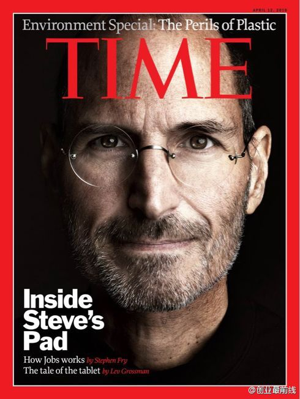

同悼念 //@DennisZz:[悼念乔布斯]@创业最前线:有时候，人生会用砖头打你的头。不要丧失信心。 你得找出你的最爱，工作上是如此，人生伴侣也如此。你的工作将占掉你人生的一大部分，唯一真正获得满足的方法就是做你相信是伟大的工作，而唯一做伟大工作的方法是爱你所做的事。如果你还没找到这些事，继续找，别停顿。——乔布斯对斯坦福毕业生的演讲 
我并不是果粉，也不是乔布斯的粉丝，甚至并不赞赏他的某些个性，但我不得不承认，他是我们这个时代最有影响力的人，没有之一。他引领创新的潮流，推动了人类历史上一次甚至不止一次深刻的变革。他离去给我们的感觉，就如同失去了一个在我们生活中经常见面的熟人，你觉得好像生活突然残缺了。